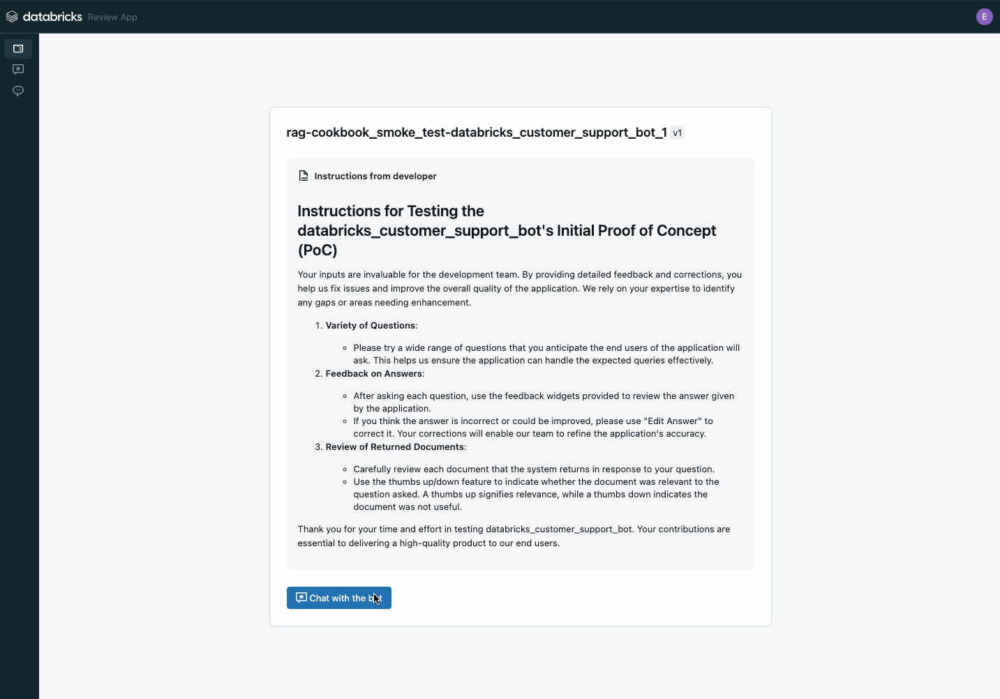

Databricks Generative AI Cookbook#
TLDR; this cookbook and its sample code will take you from initial POC to high-quality production-ready application using Mosaic AI Quality Lab and Mosaic AI Agent Framework on the Databricks platform.
The Databricks Generative AI Cookbook is a definitive how-to guide for building high-quality generative AI applications. High-quality applications are applications that:
Accurate: provide correct responses
Safe: do not deliver harmful or insecure responses
Governed: respect data permissions & access controls and track lineage
Developed in partnership with Mosaic AI’s research team, this cookbook lays out Databricks best-practice development workflow for building high-quality RAG apps: evaluation driven development. It outlines the most relevant knobs & approaches that can increase RAG application quality and provides a comprehensive repository of sample code implementing those techniques.
Important


This cookbook is intended for use with the Databricks platform. Specifically:
Mosaic AI Agent Framework which provides a fast developer workflow with enterprise-ready LLMops & governance
Mosaic AI Quality Lab which provides reliable, quality measurement using proprietary AI-assisted LLM judges to measure quality metrics that are powered by human feedback collected through an intuitive web-based chat UI
Retrieval-augmented generation (RAG)#
This first release focuses on retrieval-augmented generation (RAG). Future releases will include the other popular generative AI techniques: agents & function calling, prompt engineering, fine tuning, and pre-training.
The RAG cookbook is divided into 2 sections:
Learn: Understand the required components of a production-ready, high-quality RAG application
Implement: Use our sample code to follow an evaluation-driven workflow for delivering a high-quality RAG application
Code-based quick starts#
Time required |
Outcome |
Link |
|---|---|---|
🕧 |
Sample RAG app deployed to web-based chat app that collects feedback |
|
🕧🕧🕧 |
POC RAG app with your data deployed to a chat UI that can collect feedback from your business stakeholders |
|
🕧🕧 |
Comprehensive quality/cost/latency evaluation of your POC app |
- Evaluate your POC |